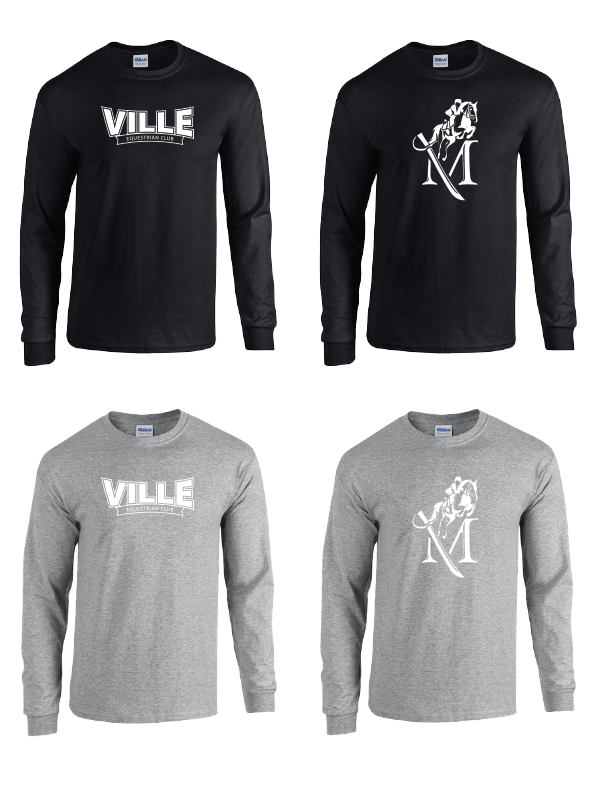
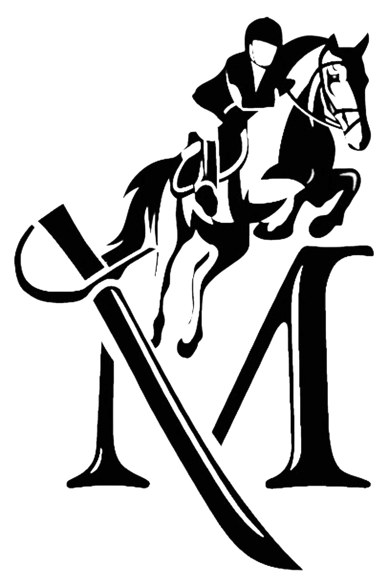
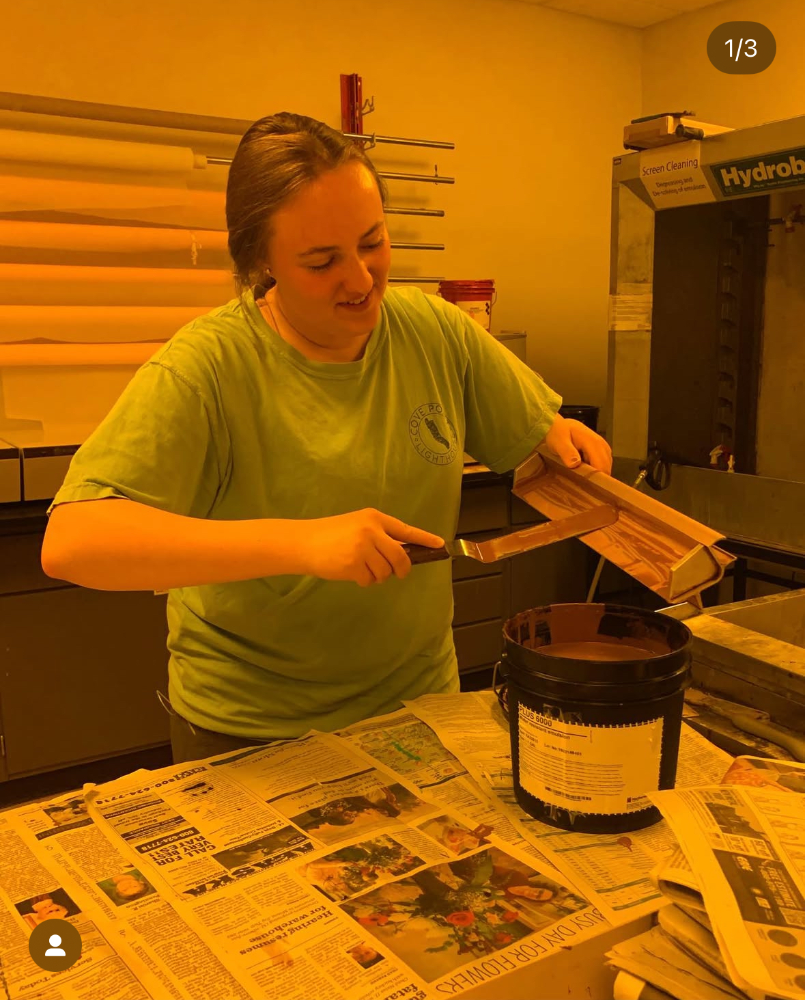
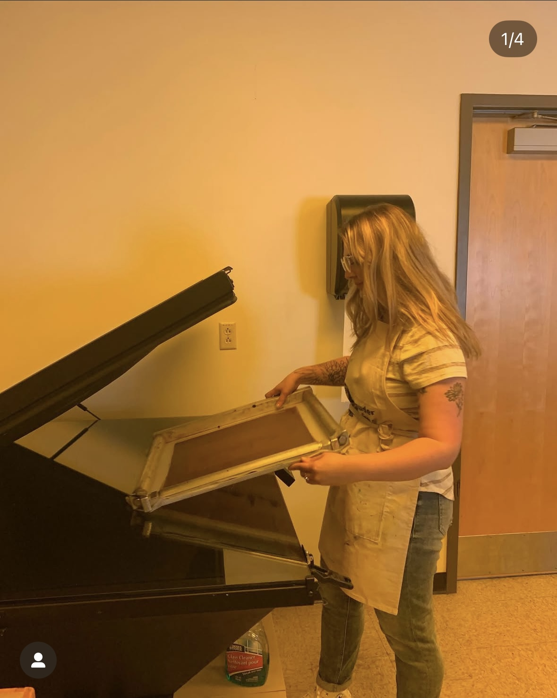
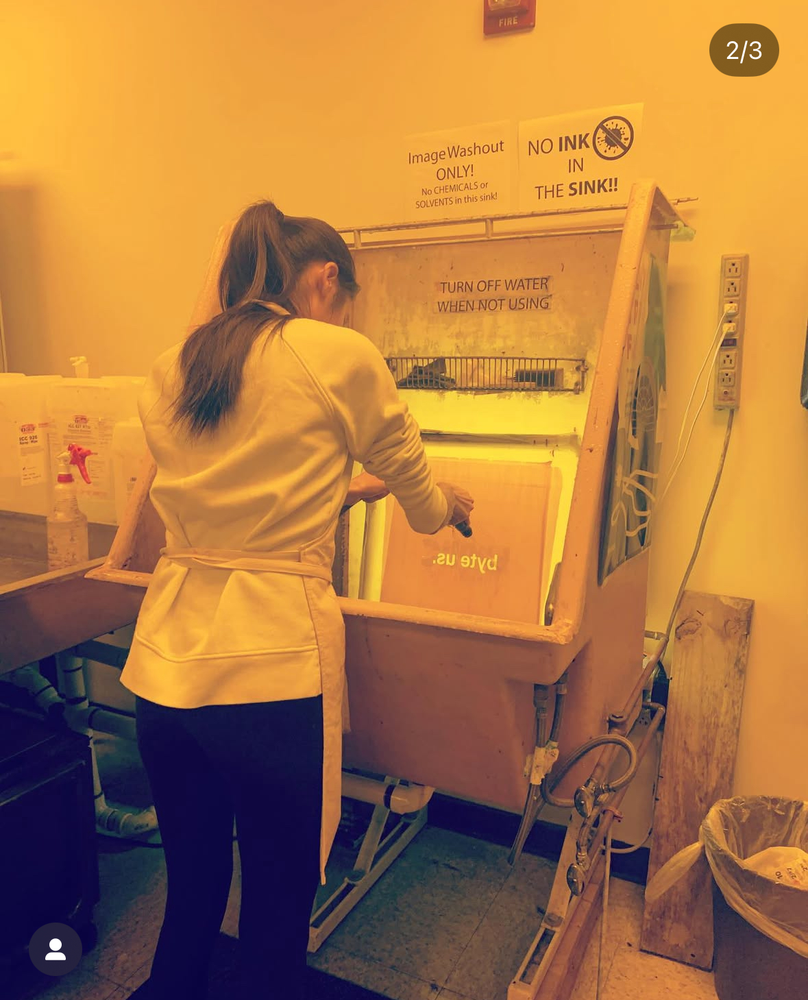
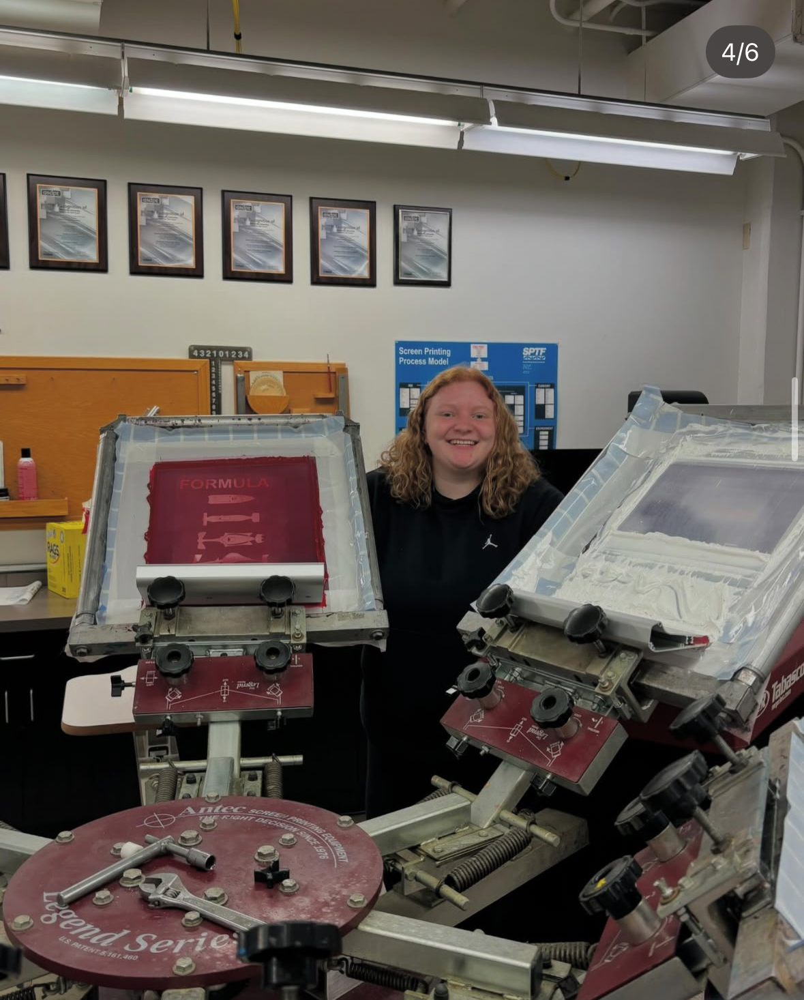
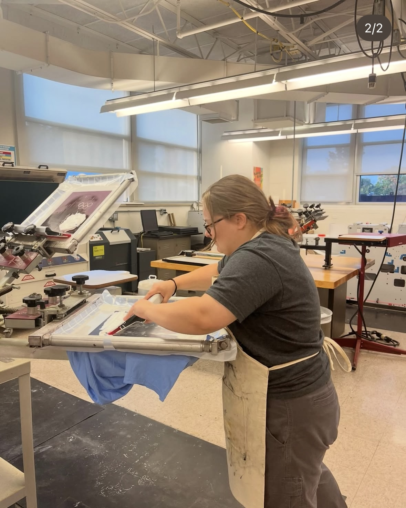
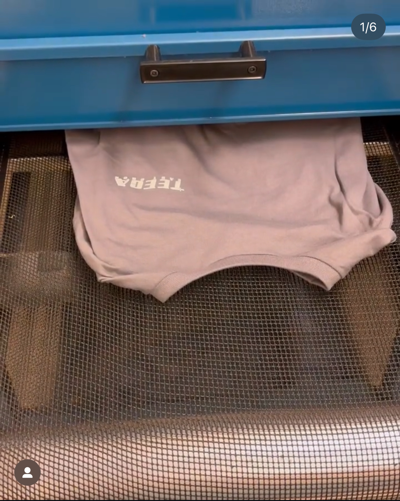
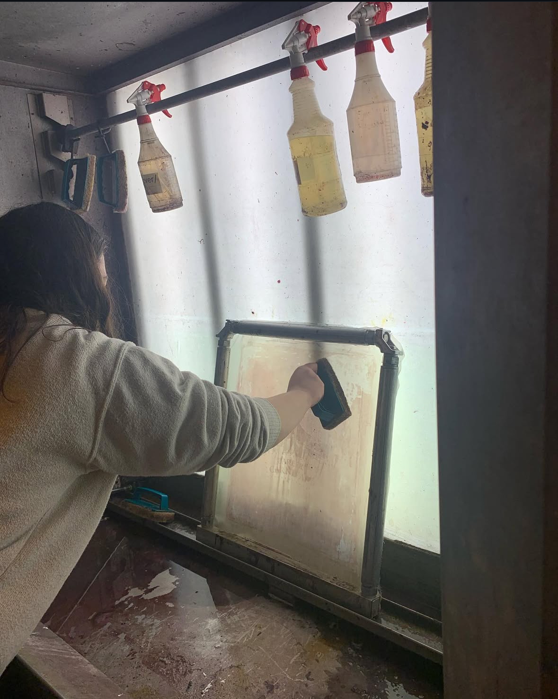

We receive an inquiry about a print order and either have a design provided or create one.
The design is edited to a compatible version that is printed on vellum, which allows it to be exposed to light.
Mesh screens are coated in emulsion and placed in a dryer for the emulsion to harden.
Once the emulsion is dry, the design is taped to the screen and placed in the exposure machine.
The vellum is removed and the screen is placed in the washout sink. Once sprayed, the design is see-through where the emulsion washed away.
Next the screen is prepped with tape and aligned to the press machine for printing.
Once aligned, ink is pressed through the screen revealing the design.
After the ink is pressed through, the shirt gets placed into a dryer twice, allowing the ink to set.
Once the shirts are given to the organization who ordered them, the screens are cleaned and ready to repeat the process. 